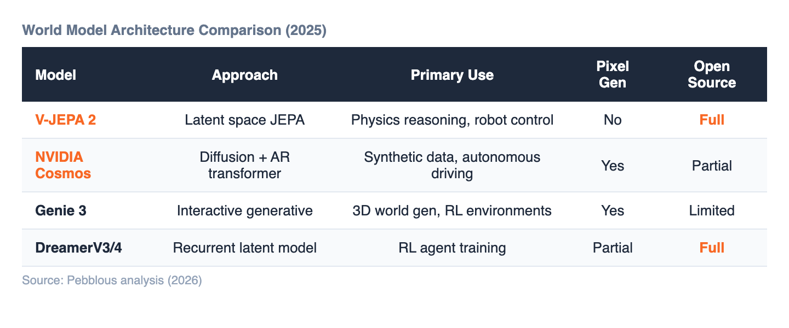

Ask GPT-4V to describe a photo of a ball on a ramp and it will give you a fluent answer. Ask it where the ball will stop after rolling down, and the answer becomes unreliable. The model can perceive. It cannot simulate physics.
This is the structural gap at the center of today's AI architectures. Vision-Language Models (VLMs) excel at understanding images and answering questions about them. Vision-Language-Action Models (VLAs) go further, predicting robot movements from visual input. But neither can answer the question that matters most for physical AI: "If I do this now, what happens to the world in 5 seconds?"
VLMs are powerful — GPT-4V, Gemini, and LLaVA have reached near-human performance on image classification and visual question answering. But they share three fundamental limitations:
"MLLMs cannot truly reason without language. Their reasoning, perception, and decision-making processes are tightly coupled to textual representations." — Zhan et al., "What Can World Models Do for LLMs?" (2025)
VLAs like RT-2, Pi0, and NVIDIA GR00T added an action prediction layer on top of VLMs. But three core weaknesses remain:
Long-horizon tasks requiring thousands of sequential actions — mining a diamond in Minecraft, complex robotic assembly — are hard to solve with VLAs alone. The ability to imagine the future, evaluate consequences inside that imagination, and select an optimal path is what world models provide.
A world model is an AI's internal predictive simulation of the environment. Rather than simply perceiving the current state, it can imagine: "If I take this action, how will the world change?" Two core functions — world understanding (internalizing physics) and future prediction (simulating consequences of possible actions).

2025 was an inflection point. Four major systems demonstrated real capability with different approaches:

The key differentiators worth noting beyond the table:
Yann LeCun has argued for years that LLMs are a dead end for true understanding. In late 2025, he made the bet concrete: founding AMI Labs with €500M at a €3B valuation, focused entirely on world models. "In 3–5 years, nobody will be using LLMs the way we use them today."
He is not alone. NVIDIA invested 20 million hours of video into Cosmos. Meta open-sourced V-JEPA 2. Google DeepMind built Genie 3. The convergence is not coincidental — it reflects a shared conclusion that perception and action without causal understanding is a ceiling, not a path.

V-JEPA 2 learns physics from 1 million hours of video. Cosmos trains on 20 million hours. But what happens when that video contains frame drops, mislabeled actions, or distribution gaps — say, 10,000 hours of sunny driving and 50 hours of rain?
The world model learns the physics of dry roads. Then it encounters a wet intersection. This is not a hypothetical: it is exactly the failure mode that autonomous driving teams spend millions diagnosing.
V-JEPA 2's 62-hour robot transfer is even more sensitive. When your entire domain adaptation budget is 62 hours, every corrupted demonstration, every mislabeled grasp, every duplicated trajectory directly degrades the model's physical understanding. There is no scale to hide behind.
As world models move from research to deployment, the bottleneck shifts from architecture to data infrastructure. The model that best understands physics will be the one trained on the cleanest data — not the most data.